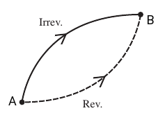

Entropia
Abbiamo visto che esistono processi chimici e fisici che procedono in una direzione senza influenza esterna, ossia spotaneamente. Se si lascia un pezzo di ghiaccio a temperatura ambiente, questo si scioglierà spontaneamente. Ci sono situazioni in cui l'entalpia del sistema, H, può aumentare, diminuire, o rimare la stessa a seguito del processo. Dunque la sola ΔH non rappresenta un criterio per decidere se una reazione chimica è spontanea o meno.
Nel 1850, col fine di caratterizzare i processi spontanei Clausius introdusse una nuova funzione di stato chiamata entropia, S, definita come

definta come il rapporto tra il calore scambiato reversibilmente dal sistema, e la temperatura alla quale tale scambio avviene. La variazione di entropia in una trasformazione che porta il sistema da uno stato A ad uno B è

Si noti che il differenziale inesatto δqrev viene convertito in un differenziale esatto moltiplicandolo per il fattore 1/T. Se immaginiamo una trasformazione del sistema tra lo stato A e lo stato B, ΔS, sarà uguale sia se il processo è reversibile sia se è irreversibile, dato che S è una funzione di stato.
Per lo stesso motivo, se attuiamo una trasformazione ciclica reversibile, che vada dallo stato A a quello B e poi torni indietro da B ad A, avrremo